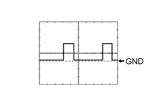
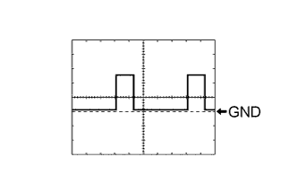

PRE-CRASH SAFETY SYSTEM > TERMINALS OF ECU |
| CHECK SEAT BELT CONTROL ECU |
Disconnect the G34 and G35 ECU connectors.
Measure the voltage and resistance according to the value(s) in the table below.
| Terminal No. (Symbol) | Wiring Color | Terminal Description | Condition | Specified Condition |
| G34-7 (+B) - Body ground | W - Body ground | Battery | Always | 11 to 14 V |
| G34-8 (PGND) - Body ground | W-B - Body ground | Body ground | Always | Below 1 Ω |
| G35-8 (IG1) - Body ground | G - Body ground | Seat belt control ECU power supply | Engine switch on (IG) | 11 to 14 V |
| G35-8 (IG1) - Body ground | G - Body ground | Seat belt control ECU power supply | Engine switch off | Below 1 V |
Reconnect the G34 and G35 ECU connectors.
Measure the voltage according to the value(s) in the table below.
| Terminal No. (Symbol) | Wiring Color | Terminal Description | Condition | Specified Condition |
| G34-2 (MOR+) - Body ground | B - Body ground | Seat belt motor RH power supply | Engine switch on (IG) | 4.0 to 8.5 V |
| G34-2 (MOR+) - Body ground | B - Body ground | Seat belt motor RH power supply | Engine switch off | Below 1 V |
| G34-1 (MOR-) - Body ground | SB - Body ground | Seat belt motor RH power supply | Engine switch on (IG) | 4.0 to 8.5 V |
| G34-1 (MOR-) - Body ground | SB - Body ground | Seat belt motor RH power supply | Engine switch off | Below 1 V |
| G34-3 (MOL+) - Body ground | R - Body ground | Seat belt motor LH power supply | Engine switch on (IG) | 4.0 to 8.5 V |
| G34-3 (MOL+) - Body ground | R - Body ground | Seat belt motor LH power supply | Engine switch off | Below 1 V |
| G34-4 (MOL-) - Body ground | G - Body ground | Seat belt motor LH power supply | Engine switch on (IG) | 4.0 to 8.5 V |
| G34-4 (MOL-) - Body ground | G - Body ground | Seat belt motor LH power supply | Engine switch off | Below 1 V |
| G35-5 (PBK+) - G35-6 (PBK-) | G - R | Front seat inner belt RH signal | Engine switch on (IG), front seat belt RH fastened | Pulse generation (See waveform 1) |
| G35-5 (PBK+) - G35-6 (PBK-) | G - R | Front seat inner belt RH signal | Engine switch on (IG), front seat belt RH unfastened | Pulse generation (See waveform 2) |
|  |
Using an oscilloscope, check waveform 1.
| Item | Content |
| Tester Connection | G35-5 (PBK+) - G35-6 (PBK-) |
| Tool Setting | 2 V/DIV., 20 ms/DIV. |
| Vehicle Condition | Engine switch on (IG), front seat belt RH fastened |
|  |
Using an oscilloscope, check waveform 2.
| Item | Content |
| Tester Connection | G35-5 (PBK+) - G35-6 (PBK-) |
| Tool Setting | 2 V/DIV., 20 ms/DIV. |
| Vehicle Condition | Engine switch on (IG), front seat belt RH unfastened |
| CHECK DRIVING SUPPORT ECU |
Disconnect the G43 ECU connector.
Measure the voltage and resistance according to the value(s) in the table below.
| Terminal No. (Symbol) | Wiring Color | Terminal Description | Condition | Specified Condition |
| G43-30 (B) - Body ground | G - Body ground | Power supply | Engine switch on (IG) | 11 to 14 V |
| G43-30 (B) - Body ground | G - Body ground | Power supply | Engine switch off | Below 1 V |
| G43-25 (GND) - Body ground | BR - Body ground | Body ground | Always | Below 1 Ω |
| G43-5 (PBSW) - Body ground | V - Body ground | Pre-crash brake cancel switch assembly signal | Pre-crash brake cancel switch assembly on | Below 1 Ω |
| G43-5 (PBSW) - Body ground | V - Body ground | Pre-crash brake cancel switch assembly signal | Pre-crash brake cancel switch assembly off | 10 kΩ or higher |